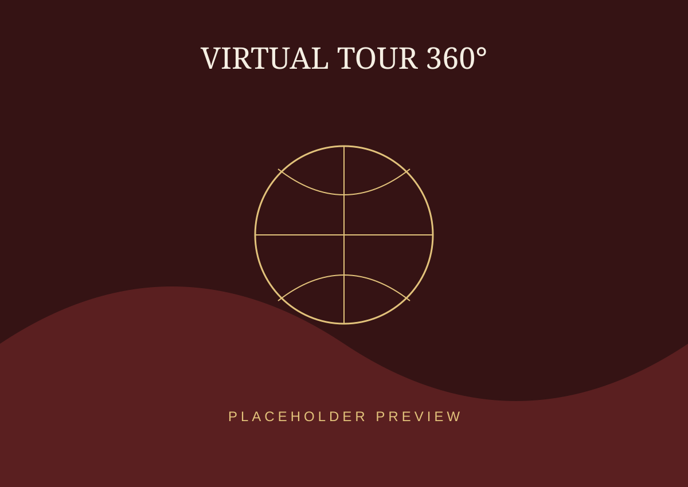

PENGALAMAN DIGITAL
Virtual Tour
Masuki Puri Ageng Marga secara virtual dan jelajahi ruang-ruang yang terdokumentasi dalam panorama 360°.

MULAI EKSPLORASI
Berjalan dari ruang ke ruang
Halaman ini disiapkan sebagai pintu masuk menuju hasil export 3DVista. Setelah folder 3DVista ditempatkan di folder tour/index.html, tombol berikut dapat langsung membuka tour.
01Panorama 360°
02Navigasi antar lokasi
03Hotspot informasi
CARA MENJELAJAH
Gunakan virtual tour dengan mudah
01
Masuk
Klik tombol mulai untuk membuka panorama 360°.
02
Jelajahi
Geser layar untuk melihat ruang dan lingkungan Puri.
03
Temukan
Gunakan hotspot untuk berpindah dan membaca informasi lokasi.